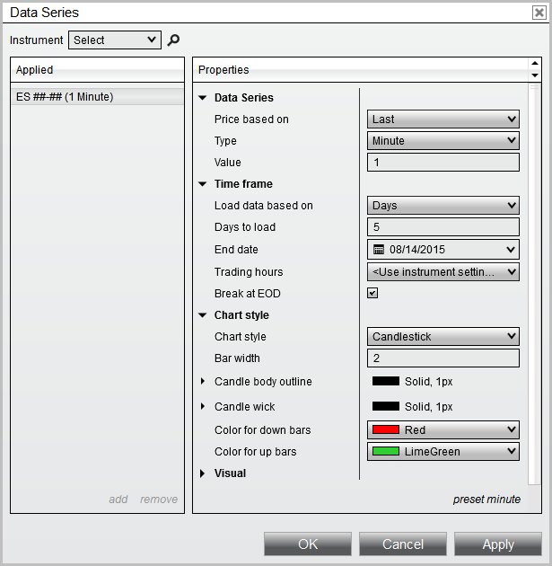

|
<< Click to Display Table of Contents >> Properties |


|
Properties
|
<< Click to Display Table of Contents >> Properties |
|
Represents various ChartBar properties configured from the Chart's Data Series menu.
Note: The properties on this page indicate what have been configured by the user, and is NOT necessarily representative of what is actually contained on the chart. For example, a user may have a requested 120 days of chart data, however only 60 days of bar data actually returned from their provider. |

Warning: These are UI properties which are designed to be set by a user. Attempting to modify these values through a custom script is NOT guaranteed to take effect. |
AutoScale |
A bool indicating if the Chart Data Series participates in the chart's auto scaling methods |
BarsBack |
An int representing the Chart's Data Series configured "Bars to load" when the RangeType.Bars is selected |
BarsPeriod |
The BarsPeriod object configured for Chart's Data Series |
CenterPriceOnScale |
A bool indicating if the Chart's Data Series should center the last traded price on the chart scale |
ChartStyle |
The ChartStyle object configured for the Chart's Data Series |
ChartStyleType |
A ChartStyleType enum indicating the type of chart style configured. System defaults include:
•ChartStyleType.Box, •ChartStyleType.CandleStick, •ChartStyleType.LineOnClose, •ChartStyleType.OHLC, •ChartStyleType.PointAndFigure, •ChartStyleType.KagiLine, •ChartStyleType.OpenClose, •ChartStyleType.Mountain |
DaysBack |
An int representing the Chart's Data Series configured "Days to load" when the RangeType.Days is selected |
DisplayInDataBox |
A bool indicating if the Chart's Data Series value should display in the Chart's Data Box |
DisplayName |
A string representing the Chart's Data Series instrument and period |
From |
A DateTime representing the Chart's Data Series configured "Start Date" when the RangeType.CustomRange configured. |
Instrument |
A string representing the Chart's Data Series instrument |
IsStableSession |
A bool indicating the Chart's Data Series Break EOD option is configured |
IsTickReplay |
A bool indicating the Chart's Data Series Tick Replay option is configured |
Label |
A string representing the configured Chart's Data Series "Label" |
LongExecutionBrush |
A Brush object representing the Chart's Data Series "Color for execution - buy" brush configured |
PaintPriceMarker |
A bool indicating the Chart's Data Series Price Marker "Visible" option is configured |
Panel |
An int indicating whichChart's Data Series "Panel" the ChartBars are configured |
PlotExecutions |
A ChartExecutionStyle enum representing "Plot executions" option. Possible values include:
•ChartExecutionStyle.DoNotPlot, •ChartExecutionStyle.MarkersOnly, •ChartExecutionStyle.TextAndMarker |
PositionPenLoser |
A Stroke object representing the Chart's Data Series "NinjaScript strategy unprofitable trade line" |
PositionPenWinner |
A Stroke object representing the Chart's Data Series "NinjaScript strategy profitable trade line" |
PriceMarker |
A PriceMarker object representing various brushes used to paint the Chart's Data Series "Price marker" |
RangeType |
A RangeType enum indicating the "Load data based on" value configured on the Data Series. Possible values include:
•RangeType.Bars, •RangeType.Days, •RangeType.CustomRange |
ScaleJustification |
A ScaleJustification enum indicating the "Scale justification" option configured on the Chart's Data Series. Possible values include:
•ScaleJustification.Right, •ScaleJustification.Left, •ScaleJustification.Overlay |
ShortExecutionBrush |
A Brush object representing the Chart's Data Series "Color for execution - sell" brush configured |
ShowGlobalDrawObjects |
A bool indicating the Chart's Data Series "Show global draw object" option is configured |
To |
A DateTime representing the configured "End Date" used with any RangeType |
TradingHoursBreakLine |
A TradingHoursBreakLine object representing the stroke used and TradingHoursBreakLineVisible enum used for the Chart's Data Series "Trading hours break line". Possible TradingHoursBreakLine.TradingHoursBreakLineVisible values include:
•TradingHoursBreakLineVisible.AllSessions, •TradingHoursBreakLineVisible.EodOnly, •TradingHoursBreakLineVisible.Off |
TradingHoursData |
A string representing the Chart's Data Series configured "Trading hours" option |